A confidence interval for a mean is a range of values that is likely to contain a population mean with a certain level of confidence.
It is calculated as:
Confidence Interval = xbar +/- t_crit * (s/√n) for small sample size n<30
Confidence Interval = xbar +/- z_crit * (s/√n) for larger sample size n>=30
where:
xbar: sample mean
t_crit : t-value that corresponds to the confidence level
z_crit : z-value at corresponds to the confidence level, z_crit = 1.96 for 5% significance level two tailed normal distribution.
s: sample standard deviation (unbiased)
n: sample size
sem = s/sqrt(n) # NOTE: np.std np.nanstd uses biased ddof=0 but stats.sem uses unbiased ddof=1 by default.
ci = (phat - margin_of_error, phat + margin_of_error)
moe = z_crit * standard_error
z_crit = 1.96 for two-tailed test at 5% significance level.
se = sigma / sqrt(n)
For coin toss:
Z = (phat - p0) / sqrt(p0q0/n)
pval = 1 - stats.norm.cdf(Z)
if pval < alpha:
Reject Null Hypothesis that coin is unbiased and say it maybe biased.

The confidence level tells you how sure you can be and is expressed as a percentage.
α (Alpha) is called the significance level, and is the probability of rejecting the null hypothesis when it is true.
It is usually set at or below 5%.
If your significance level is 0.05, the corresponding confidence level is 95%.
If your significance level of 0.05, there’s a 5% risk of concluding that a difference exists when there is no actual difference.
import numpy as np, scipy.stats as st
# returns confidence interval of mean
def confIntMean(a, conf=0.95):
mean, sem, m = np.mean(a), st.sem(a), st.t.ppf((1+conf)/2., len(a)-1)
return mean - m*sem, mean + m*sem
def mean_confidence_interval(data, confidence=0.95):
a = 1.0 * np.array(data)
n = len(a)
m, se = np.mean(a), scipy.stats.sem(a)
h = se * scipy.stats.t.ppf((1 + confidence) / 2., n-1)
return m, m-h, m+h
a = np.array([1,2,3,4,4,4,5,5,5,5,4,4,4,6,7,8])
# better method
confIntMean(a, 0.68) # (3.9974214366806184, 4.877578563319382)
# scipy method
st.norm.interval(0.68, loc=np.mean(a), scale=st.sem(a))
#(4.0120010966037407, 4.8629989033962593)
# ====================== Example 02 ============================
# using statsmodels
# https://stackoverflow.com/questions/15033511/compute-a-confidence-interval-from-sample-data/15034143#15034143
import statsmodels.stats.api as sms
sms.DescrStatsW(a).tconfint_mean()
a = list(range(10,14))
mean_confidence_interval(a)
# (11.5, 9.4457397432391215, 13.554260256760879)
st.t.interval(0.95, len(a)-1, loc=np.mean(a), scale=st.sem(a))
# (9.4457397432391215, 13.554260256760879)
# sms.DescrStatsW(a).tconfint_mean()
# (9.4457397432391197, 13.55426025676088)
# And finally, the incorrect result using st.norm.interval():
st.norm.interval(0.95, loc=np.mean(a), scale=st.sem(a))
# (10.23484868811834, 12.76515131188166)
import numpy as np
import tqdm
from scipy import stats
alpha = 0.05
a = np.array([1,2,3,4,4,4,5,5,5,5,4,4,4,6,7,8])
reps = 1_000
sample = a # suppose that a is sample drawn from big population
ci_points = [] # point estimate
for _ in tqdm.trange(reps):
bootsample = np.random.choice(sample, size=len(sample),replace=True)
# make sure to use bootsample, not sample!
ci_lo, ci_hi = stats.t.interval(1-alpha,
df = len(bootsample)-1,
loc=np.mean(bootsample),
scale=stats.sem(bootsample))
ci_point = (ci_lo+ci_hi)/2
ci_points.append(ci_point)
ci_point = np.mean(ci_points)
ci_lo, ci_hi = np.percentile(ci_points, [alpha/2*100,100-alpha/2*100]) # alpha/2*100 is 2.5
import numpy as np
from scipy import stats
# alpha to critical
alpha = 0.05
n_sided = 2 # 2-sided test
z_crit = stats.norm.ppf(1-alpha/n_sided)
print(z_crit) # 1.959963984540054
# critical to alpha
alpha = stats.norm.sf(z_crit) * n_sided
print(alpha) # 0.05
import numpy as np
from scipy scipy import stats
# define sample data
data = [12, 12, 13, 13, 15, 16, 17, 22, 23, 25, 26, 27, 28, 28, 29]
# create 95% confidence interval for population mean weight
# sem is standard error of mean
# significance level alpha = 0.05 and confidence level gamma = 0.95
# even though scipy stats t interval has first parameter called alpha it is 1-alpha
alpha = 0.05
stats.t.interval(1-alpha, df=len(data)-1, loc=np.mean(data), scale=st.sem(data))
# (17.40, 21.08)
# create 99% confidence interval for same sample
alpha = 0.01
stats.norm.interval(1-alpha, loc=np.mean(data), scale=st.sem(data))
# (16.82, 21.66)
# if confidence level is high, confidence level is wider
import numpy as np
import scipy.stats as stats
#define sample data
np.random.seed(0)
data = np.random.randint(10, 30, 50)
#create 95% confidence interval for population mean weight
# significance level alpha = 0.05 and confidence level gamma = 0.95
stats.norm.interval(alpha=0.95, loc=np.mean(data), scale=st.sem(data))
import numpy as np
from scipy import stats
# define given sample data
data = [45, 55, 67, 45, 68, 79, 98, 87, 84, 82]
# Calculate the sample parameters
significanceLevel alpha = 0.05 # 5%
confidenceLevel CL = 0.95 # 95% CI given
degrees_freedom df = len(data)-1 # degree of freedom = sample size-1
sampleMean xbar = np.mean(data) # sample mean
sampleStandardError sem = stats.sem(data,ddof=1) # sample standard error (default is already ddof=1 unlike numpy)
# create 95% confidence interval for the population mean
# scipy stats interval function has parameter alpha actually equal to 1-alpha
confidenceInterval = stats.t.interval(alpha=confidenceLevel, df=degrees_freedom, loc=sampleMean, scale=sampleStandardError)
# print the 95% confidence interval for the population mean
print('The 95% confidence interval for the population mean :',confidenceInterval)
import numpy as np
import scipy.stats as st
# define given sample data
data = [87,80,68,72,56,58,60,63,82,70,58,55,48,50,77]
# Calculate the sample parameters
confidenceLevel = 0.98 # 98% CI given
degrees_freedom = len(data)-1 # degree of freedom = sample size-1
sampleMean = np.mean(data) # sample mean
sampleStandardError = st.sem(data) # sample standard error
#create 98% confidence interval for the population mean
confidenceInterval = st.t.interval(alpha=confidenceLevel, df=degrees_freedom, loc=sampleMean, scale=sampleStandardError)
#print the 98% confidence interval for the population mean
print('The 98% confidence interval for the population mean weight :',confidenceInterval)
def bootstrap_ci(
data,
statfunction=np.average,
alpha = 0.05,
n_samples = 100):
"""inspired by https://github.com/cgevans/scikits-bootstrap"""
import warnings
def bootstrap_ids(data, n_samples=100):
for _ in range(n_samples):
yield np.random.randint(data.shape[0], size=(data.shape[0],))
alphas = np.array([alpha/2, 1 - alpha/2])
nvals = np.round((n_samples - 1) * alphas).astype(int)
if np.any(nvals < 10) or np.any(nvals >= n_samples-10):
warnings.warn("Some values used extremal samples; results are probably unstable. "
"Try to increase n_samples")
data = np.array(data)
if np.prod(data.shape) != max(data.shape):
raise ValueError("Data must be 1D")
data = data.ravel()
boot_indexes = bootstrap_ids(data, n_samples)
stat = np.asarray([statfunction(data[_ids]) for _ids in boot_indexes])
stat.sort(axis=0)
return stat[nvals]
# usage
# simulate some data from a pareto distribution
np.random.seed(33)
data = np.random.pareto(a=1, size=111)
sample_mean = np.mean(data)
plt.hist(data, bins=25)
plt.axvline(sample_mean, c='red', label='sample mean'); plt.legend()
# generate confidence intervals for the SAMPLE MEAN with bootstrapping
low_ci, up_ci = bootstrap_ci(data, np.mean, n_samples=1000)
#plot the resuts
plt.hist(data, bins=25)
plt.axvline(low_ci, c='orange', label='low_ci mean')
plt.axvline(up_ci, c='magenta', label='up_ci mean')
plt.axvline(sample_mean, c='red', label='sample mean'); plt.legend()
#generate confidence intervals for the DISTRIBUTION PARAMETERS with bootstrapping
from scipy.stats import pareto
true_params = pareto.fit(data)
low_ci, up_ci = bootstrap_ci(data, pareto.fit, n_samples=1000)
# low_ci[0] and up_ci[0] are the confidence intervals for the shape param
# low_ci[0], true_params[0], up_ci[0] ---> (0.8786, 1.0983, 1.4599)
import numpy as np
def bootstrap_ci_two_groups(df, variable, classes, repetitions = 1000, alpha = 0.05, random_state=None):
# df: a data frame that includes observations of the two sample
# variable: the column name of the column that includes observations
# classes: the column name of the column that includes group assignment (This column should contain two different group names)
# repetitions: number of times you want the bootstrapping to repeat. Default is 1000.
# alpha: likelihood that the true population parameter lies outside the confidence interval. Default is 0.05.
# random_stata: enable users to set their own random_state, default is None.
df = df[[variable, classes]]
bootstrap_sample_size = len(df)
mean_diffs = []
for i in range(repetitions):
bootstrap_sample = df.sample(n = bootstrap_sample_size, replace = True, random_state = random_state)
mean_diff = bootstrap_sample.groupby(classes).mean().iloc[1,0] - bootstrap_sample.groupby(classes).mean().iloc[0,0]
mean_diffs.append(mean_diff)
# confidence interval
left = np.percentile(mean_diffs, alpha/2*100)
right = np.percentile(mean_diffs, 100-alpha/2*100)
# point estimate
point_est = df.groupby(classes).mean().iloc[1,0] - df.groupby(classes).mean().iloc[0,0]
print('Point estimate of difference between means:', round(point_est,2))
print((1-alpha)*100,'%','confidence interval for the difference between means:', (round(left,2), round(right,2)))
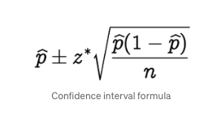
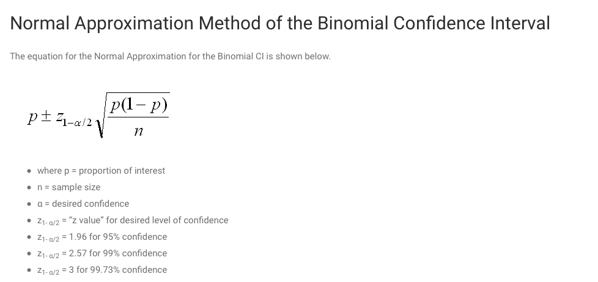
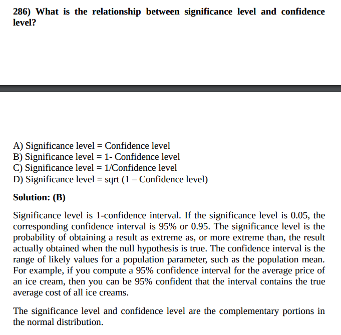
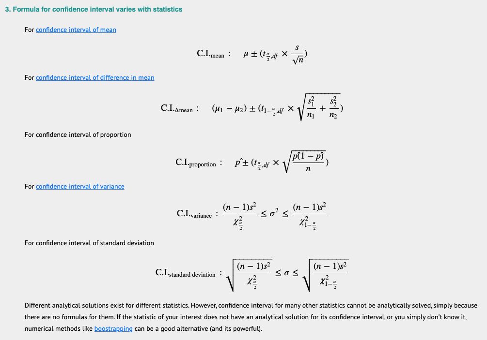
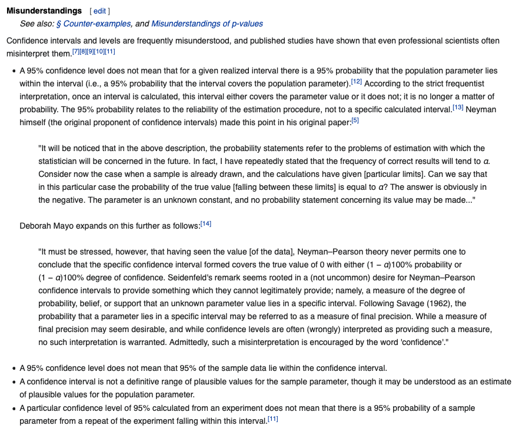
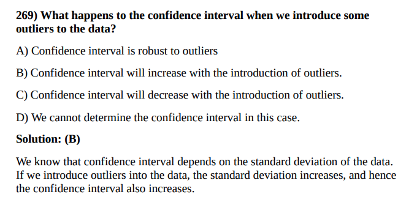
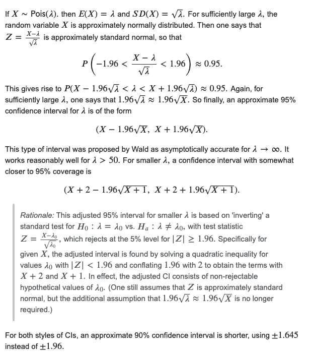
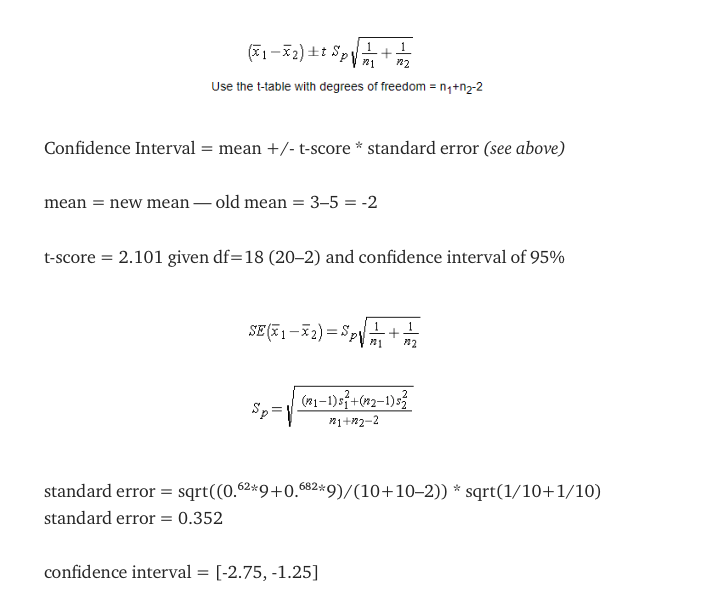
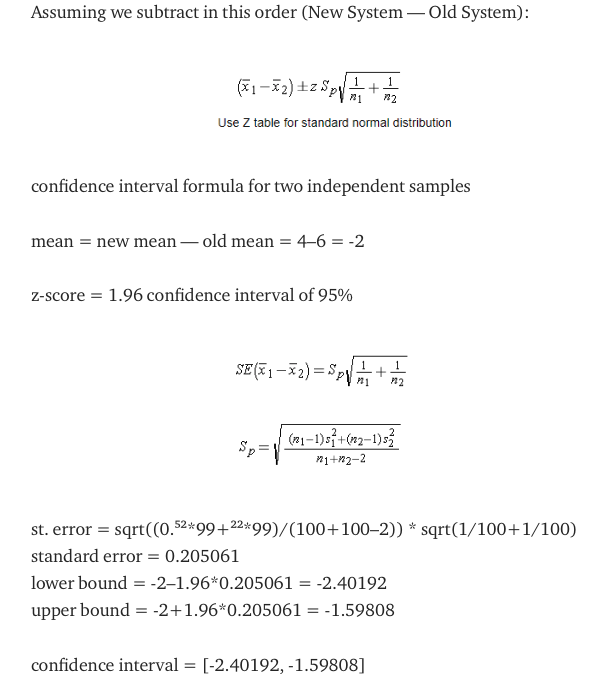
 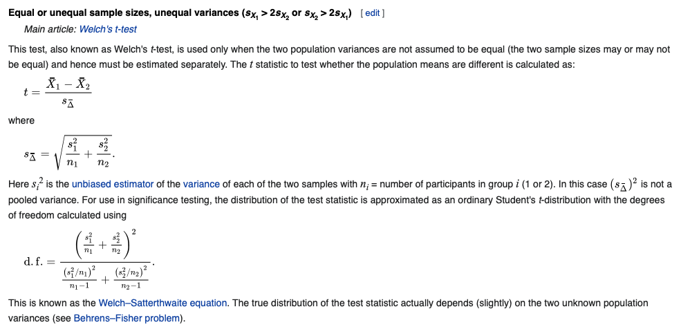
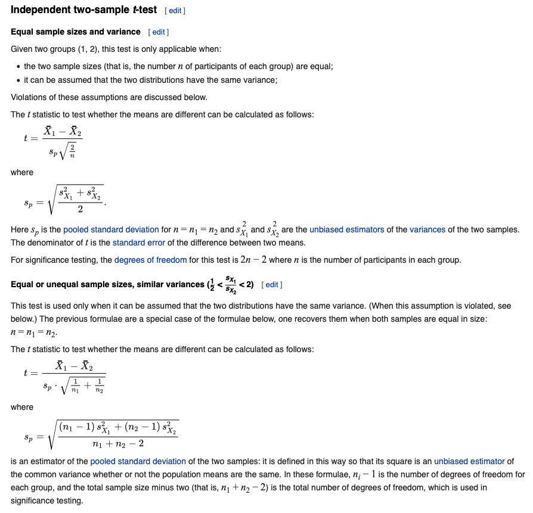
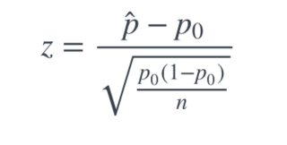
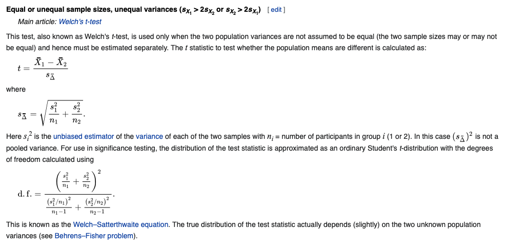
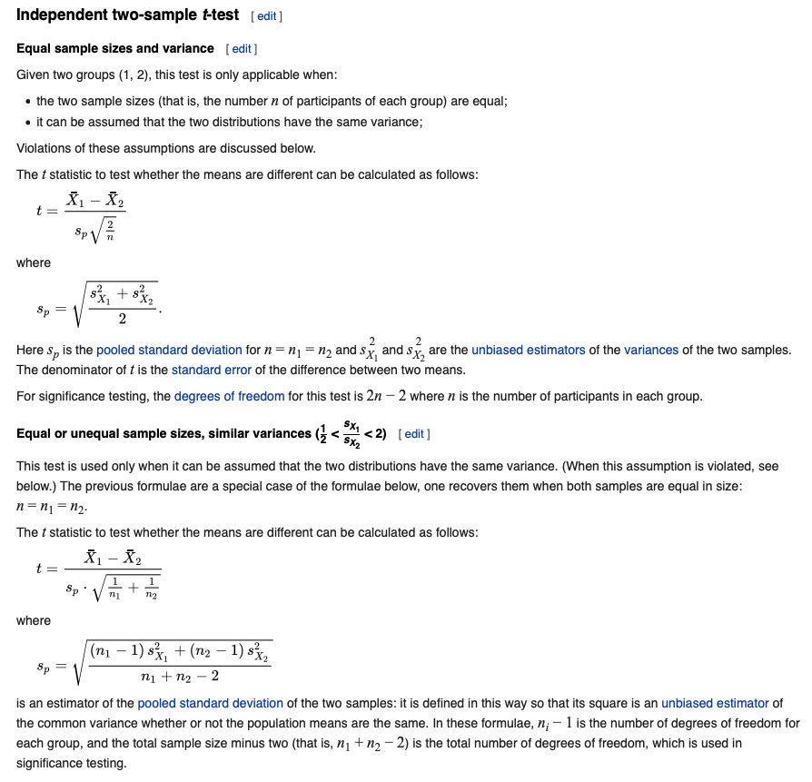
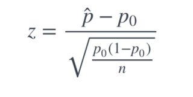
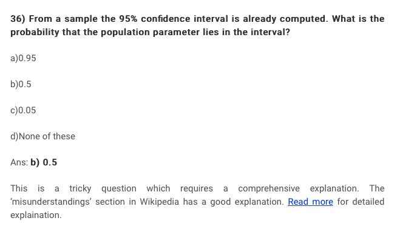 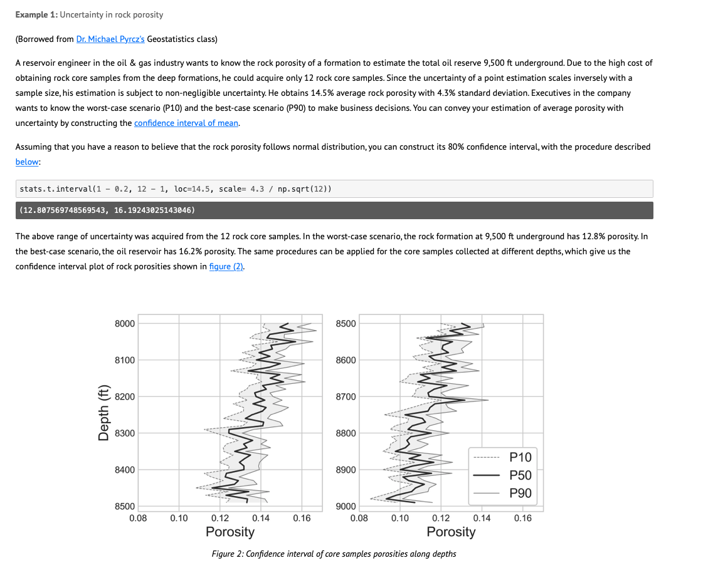 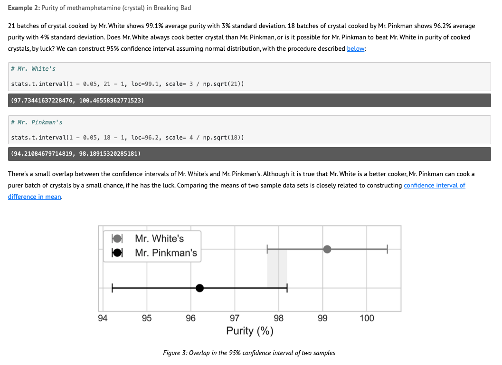